I designed this website as an exercise to my programming and application course (COTM5284).
A CASE STUDY ON THE HISTORICAL BUILDING OF VILLA SAVOYE
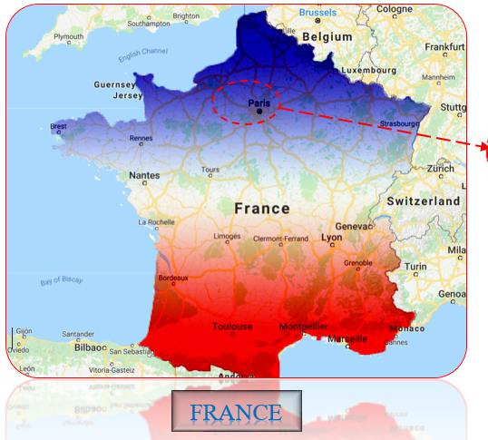
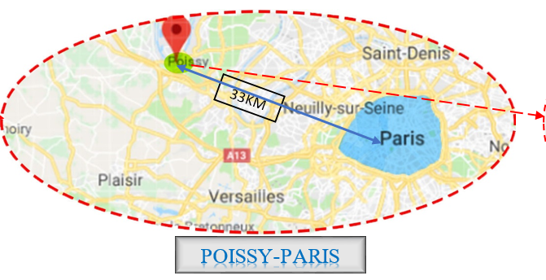
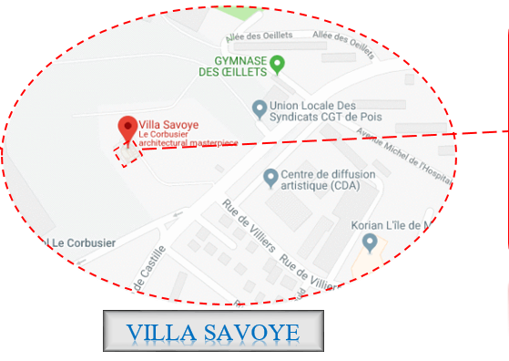
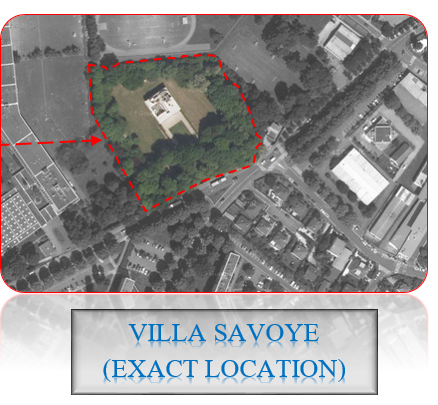
Introduction
A MODERNIST VILLA IN POISSY; 33 KM AWAY FROM CAPITAL OF FRANCE (PARIS) IN RESIDENTIAL PART OF POISSY (82 RUE DE VILILIERS 78300 POISSY
AS THE LAST PURIST VILLA, IT IS AN ATTEMPT OF RECONCILIATION BETWEEN THE PLATONIC ATTRIBUTES OF NATURE AND MAN
DESIGNED AND CONSTRUCTED BETWEEN 1929 AND 1931 BY LE CORBUSIER AND HIS COUSIN, PIERRE JEANNERET
NAMED “LES HEURES CLAIRES” BY LE CORBUSIER
COMMISSIONED AS A PRIVATE COUNTRY RESIDENCE BY PIERRE AND EMILIE SAVOYE IN 1928.
THEY CAME FROM A WEALTHY PARISIAN FAMILY THAT RAN A LARGE AND SUCCESSFUL INSURANCE COMPANY AND OWNED LAND IN THE TOWN OF POISSY.
LE CORBUSIER NOTED THAT HIS CLIENTS WERE: ‘QUITE WITHOUT PRECONCEPTIONS, EITHER OLD OR NEW’ AND ONLY HAD A VAGUE IDEA OF WHAT THEIR FUTURE COUNTRY HOUSE SHOULD LOOK LIKE.
IS RECOGNIZED AS THE MOST FAITHFUL TO HIS FIVE POINTS OF ARCHITECTURE.
THE VILLA HAS BECOME AN ICON OF LE CORBUSIER’S IDEALS AND METHODOLOGY.
HEIGHT – 9.4 M
BUILUP AREA – 410 M2
ARCHITECTUAL STYLE - INTERNATIONAL STYLE, MODERN ARCHITECTURE
OWNER – FRENCH GOVERNMENT
THE CLIENT
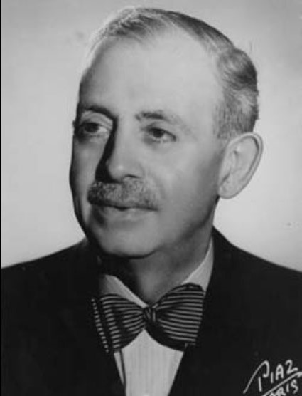
PIERRE SAVOYE IS AWEALTHY FRENCH INSURER AND HIS WIFE EUGENIE
THEY WANTED TO COMMISION LE COBUSIER THE DESIGN OF A COUNTRY HOUSE.
THEY LEFT LE CORBUSIER LARGELY FREE TO DESIGN THE HOUSE HE WANTED,
ONLY REQUIRING APRECISE PROGRAM OF SPACES AND LATER ON,
SOME CHANGES IN ORDER TO REDUCE COSTS.
LE CORBUSIER WHROTE THAT “THEY WANTED TO LIVE IN COUNTRY SIDE.
OTHER DOCUMENTS SUGGEST THAT THE BUILDING WAS POSSIBLY INTENDED AS ARURAL RETREAT RATHER THAN PERMANENT ABODE.
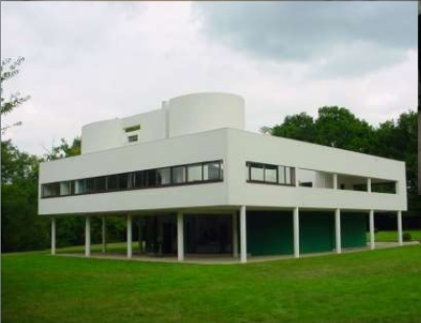
THE ARCHITECT
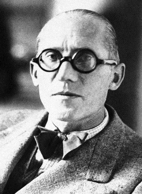
CHARLES-ÉDOUARD JEANNERET, KNOWN AS LE CORBUSIER
(6 OCTOBER 1887 – 27 AUGUST 1965), WAS A SWISSFRENCH ARCHITECT,
DESIGNER, PAINTER, URBAN PLANNER, WRITER, AND ONE OF
THE PIONEERS OF WHAT IS NOW CALLED MODERN ARCHITECTURE.
HE WAS BORN IN SWITZERLAND AND BECAME A FRENCH CITIZEN IN 1930.
HIS CAREER SPANNED FIVE DECADES AND HE DESIGNED BUILDINGS IN EUROPE,
JAPAN, INDIA, AND NORTH AND SOUTH AMERICA.
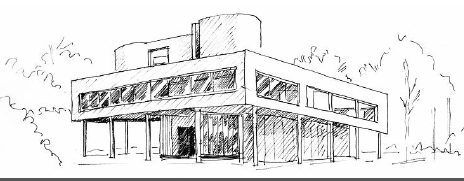
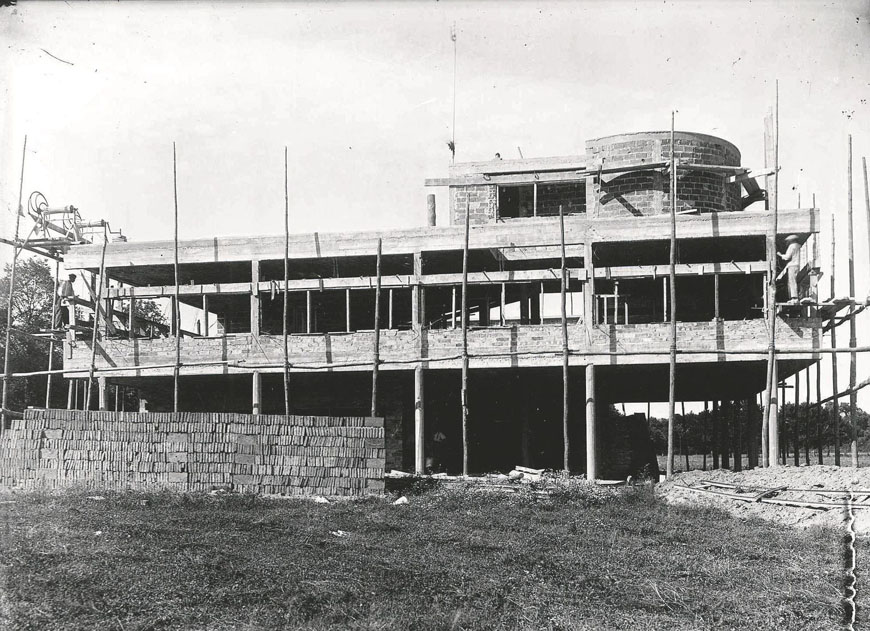
SOLAR INTENSITY, ORIENTATION AND WIND DIRECTION ANALYSIS
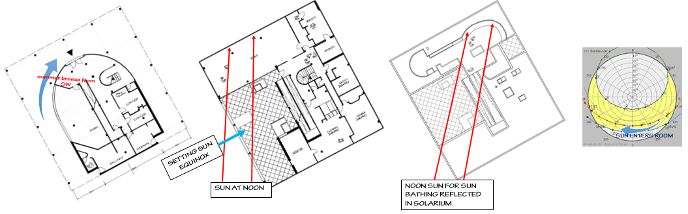
IN THE SPRING AND FALL LATE MORNING AND MID-DAY SUN FALLS ON TILE FLOOR OF THE SALON,
MAKING THE SPACE WARM AND COMFORTABLE.
IN THE SUMMER, ONLY MINIMAL SUNLIGHT ENTERS,
IN THE WINTER THE ANGLE IS SO LOWTHAT IT DOES NOT HEAT THE FLOOR EXTENSIVELY.
THE SPACE IS THERMALLY COMFORTABLE IN MID DAY IN SPRING, SUMMER AND FALL
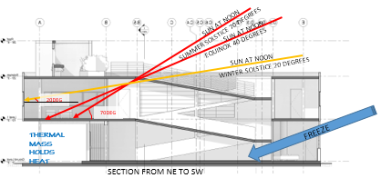
Salon has thermal mass in floor that is warmed by midday sun in spring and fall.
In summer thermal mass is not hit by sun so retains coolness.
In spring and fall, the salon is warmer than surrounding spaces.
In summer it is cooler.
Solarium on roof catches midday sun all year. So it always heats up to be warmer than surrounding air.
Setting sun can be seen from table on patio. Glare shielded by wall above opening and by trees.
The floors are built of terracotta tile so have little insulation value. Floors not lit by sun will be cool.
Patio receives breeze from SW in summer. It is sheltered from cold NW wind in winter.